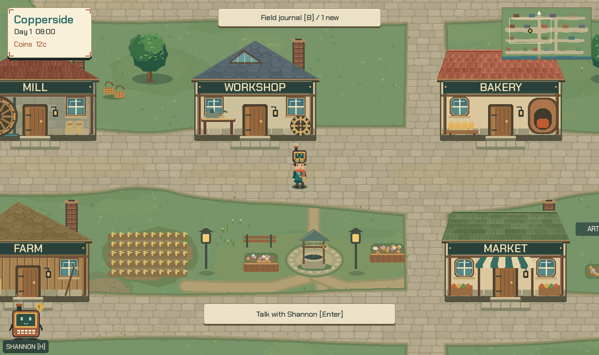

Matching Day 1 views at the original 1280 × 760 gameplay resolution. Switch between Before and After without moving the camera. Buildings, entrances and collision boundaries retain their positions.

Additional checks: developed cottages · opened commercial site · all eighteen buildings · town overview.